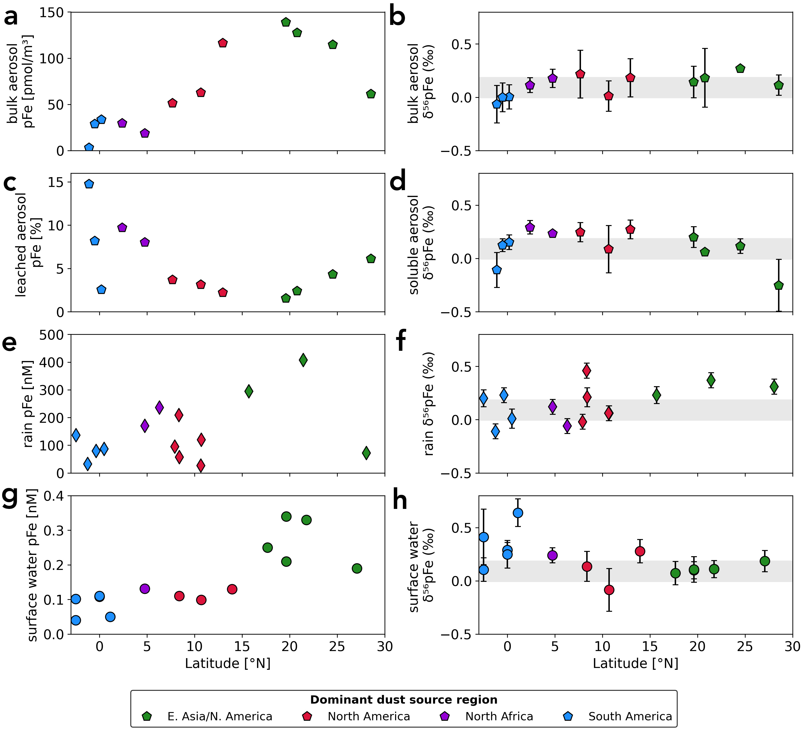
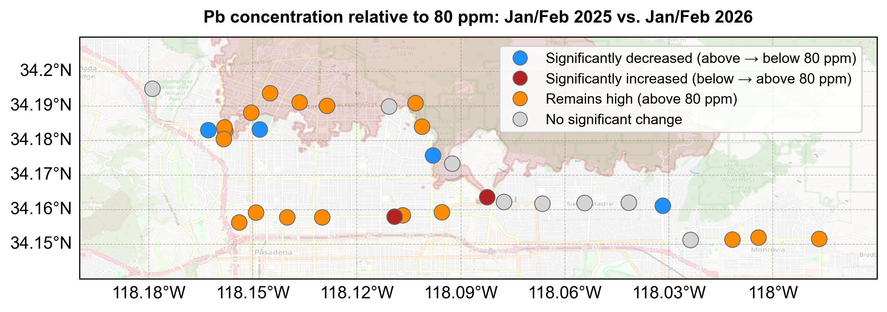
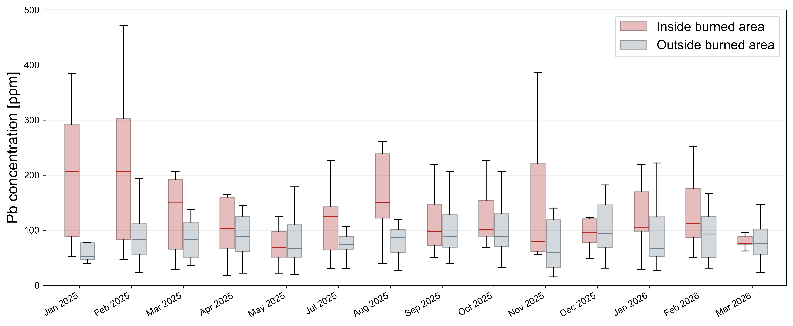

Research Highlights

A link between aerosol Fe and atmospheric CO2 drawdown
In July 2022, a large phytoplankton bloom formed in the surface ocean northeast of the Hawaiian Islands. Within the bloom, we measured high iron concentrations in waters where the larger cell organisms and nitrogen fixers, both which have higher demand for Fe to grow, were thriving.
We observed that a large pulse of atmospheric iron was deposited 4-weeks prior to the formation of the bloom and may have played a role in providing critical nutrients to the waters where nitrogen fixing organisms can rapidly grow. We developed a modeling framework to identify and quanitfy atmospheric deposition pulses of Fe to the surface waters where the bloom formed.
Independent observations (Chow et al., 2025; Seelen et al., 2025) demonstrate that, following nutrient addition, the incubation period required to detect discernible nitrogen fixation activity in this region is approximately 3–4 weeks. We demonstrate that aerosol Fe deposition may play a critical role in facilitating atmospheric carbon dioxide drawdown during the summer months in this region.
Work published in Global Biogeochemical Cycles


Aerosol Fe supply to the North Pacific Ocean
Atmospheric deposition delivers Fe to the remote ocean where other sources are minimal. However, given their disparate and episodic nature, it is challenging to quantify their contribution to the surface ocean inventory.
Bulk aerosol Fe concentrations are collelated with Fe in rainwater and particulate Fe in the underlying surface seawater, indicating that atmospheric deposition is the primary source of Fe in the North Pacific Subtropical Gyre. Aerosol Fe solubility varies inversely with bulk aerosol Fe concentration, such that the highest-concentration samples in the subtropical gyre are the least soluble (1%) and the lowest-concentration equatorial samples are the most soluble (15%). We attribute this inverse relationship to the lithogenic content of the aerosol: samples with high total Fe are dominated by mineral dust, in which Fe is held in refractory aluminosilicate phases of low solubility, whereas samples with low total Fe likely carry a proportionally greater contribution from combustion and biomass-burning particles.
Work in prep for publication
Long term impact of contaminant loading after an urban fire
The Eaton Fires led to the destruction of over 20,000 homes in January 2025. Contaminants, including in lead, were significantly elevated immediately after the fire, measured in the smoke plume, runoff, and roadside dust. The source of lead likely came from burning structures containing lead in paint, plumbing, and car batteries, and resulted in widespread urban lead contaminants.

